Out of model predictions with PyMC

PyMC has three core functions that map to the traditional Bayesian workflow:
Prior predictive sampling helps understanding the relationship between the parameter priors and the outcome variable, before any data is observed.
Sampling is used to infer the posterior distribution of parameters in a model, conditioned on observed data.
Finally, posterior predictive sampling can be used to predict new outcomes, conditioned on the posterior parameters.
What may not be immediately obvious is that predictions need not be done on the same model where parameters were inferred.
For example, if you learn (make inferences) about the volatility of a process in one context (or model), and you expect it to be similar in another, you can use what you learned to make better predictions in that second context (or predictive model). As we will see, the posterior predictive sampling function is more than happy to support this type of knowledge transfer.
In this blog post, we will walk through five different applications of the sample_posterior_predictive function:
- Making predictions on the same model
- Making predictions on different models
- Simulating new groups in hierarchical models
- Forecasting time series
- Sampling latent variables
A simple use of posterior predictive sampling
import arviz as az import pymc as pm import numpy as np import matplotlib.pyplot as plt import seaborn as sns seed = sum(map(ord, "Posterior Predictive")) rng = np.random.default_rng(seed) sns.set_style("darkgrid") sns.set(font_scale=1.3) print(f"Using arviz version: {az.__version__}") print(f"Using pymc version: {pm.__version__}")
Using arviz version: 0.13.0
Using pymc version: 5.3.1
There are two common uses of posterior predictive sampling, which we illustrate here:
- Performing posterior predictive checks
- Obtaining out-of-sample predictions
with pm.Model() as m: # y ~ 2 * x x = pm.MutableData("x", [-2, -1, 0, 1, 2]) y_obs = [-4, -1.7, -0.1, 1.8, 4.1] beta = pm.Normal("beta") y = pm.Normal("y", mu=beta * x, sigma=0.1, shape=x.shape, observed=y_obs) idata = pm.sample(random_seed=rng)
Auto-assigning NUTS sampler...
Initializing NUTS using jitter+adapt_diag...
Multiprocess sampling (4 chains in 4 jobs)
NUTS: [beta]
with m: pp = pm.sample_posterior_predictive(idata, random_seed=rng)
Sampling: [y]
az.plot_ppc(pp);
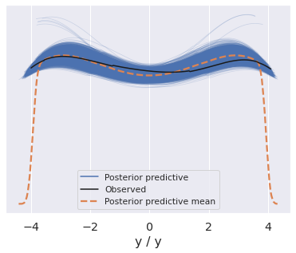
with m: # Make predictions conditioned on new Xs pm.set_data({"x": [-1, 3, 5]}) pp = pm.sample_posterior_predictive(idata, predictions=True, random_seed=rng)
Sampling: [y]
az.plot_posterior(pp, group="predictions");
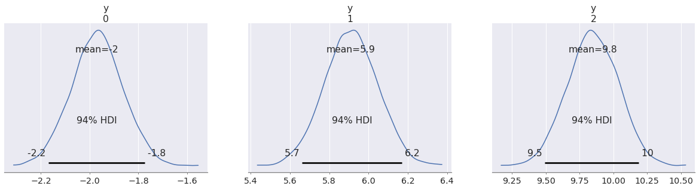
In this blog post we are mostly interested in out-of-sample predictions, but we will see some cases of in-sample predictions as well.
In (generalized) linear models like this one we can obtain out-of-sample predictions by conditioning on new predictor values. When we do this, we are implicitly assuming that the same statistical relationship between predictor and outcome still holds.
There is nothing special about linear models, other than how easy it is to make predictions. In PyMC we don't even need to write a new model as we can simply swap the predictors with set_data (docs).
However, there are many cases where such a "trick" does not suffice. We may need to write separate models for parameter inference and predictions, respectively. You may actually have multiple models for different types of predictions. This blog post shows how this can be done easily in PyMC.
Before we move on, let's see how we could have written a separate predictive model even for this simple linear model:
with pm.Model() as pred_m: # Only x changes x = np.array([-1, 0, 1]) beta = pm.Normal("beta") y_pred = pm.Normal("y_pred", mu=beta * x, sigma=0.1, shape=x.shape) pp = pm.sample_posterior_predictive( idata, var_names=["y_pred"], predictions=True, random_seed=rng, )
Sampling: [y_pred]
az.plot_posterior(pp, group="predictions");
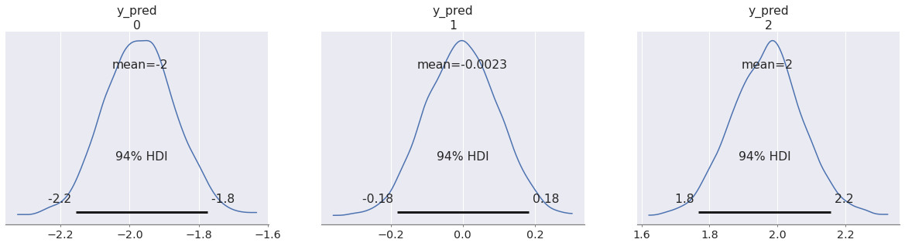
Notice that we reused the idata object we got from sampling the first model. The posterior samples for the beta variable contained there were used when making predictions in this new model. We will explain in a moment how this works under the hood, but the important point is that sample_posterior_predictive does not care whether the current model is the one that generated the posterior draws we fed into it.
You may also have noticed that we had to pass var_names=["y_pred"].
By default, sample_posterior_predictive only samples observed variables, but in our predictive model we didn't have observations (otherwise they wouldn't be predictions). We defined y_pred as an unobserved random variable (the kwarg observed was not specified). To get posterior predictive samples from these variables, we just need to include them in var_names.
Now let's see how we can apply this strategy in more complex cases.
Making predictions on different models
If we believe that our inferred variables are still valid in a new context, we can use posterior predictive sampling to make predictions conditioned on those variables.
In this example we imagine we have a process where the latent mean is the same as in the linear model above, but the observational noise follows a Student's T-distribution instead of a normal.
In our model, it means we assume mu = beta * x still holds. All the knowledge we have about beta is conveniently stored as posterior draws in our InferenceData, which we will reuse in the new model.
idata.posterior.beta
<xarray.DataArray 'beta' (chain: 4, draw: 1000)>
array([[1.99738968, 1.99738968, 2.03544969, ..., 2.03003163, 1.91305585,
1.91551041],
[1.97578801, 1.99005488, 1.95586019, ..., 1.96489625, 1.96489625,
1.9623966 ],
[1.9866023 , 2.04438365, 1.90143213, ..., 2.0112917 , 2.01303214,
1.99563726],
[1.96956778, 1.96956778, 1.96431009, ..., 1.97842336, 1.96940486,
1.99869095]])
Coordinates:
* chain (chain) int64 0 1 2 3
* draw (draw) int64 0 1 2 3 4 5 6 7 8 ... 992 993 994 995 996 997 998 999You may want to pause and read about InferenceData before we go on.
with pm.Model() as pred_t_m: # Using the same x as in the last example x = np.array([-1, 0, 1]) beta = pm.Normal("beta") # Only the likelihood distribution changes y_t = pm.StudentT("y_pred_t", nu=4, mu=beta * x, sigma=0.1) pp_t = pm.sample_posterior_predictive( idata, var_names=["y_pred_t"], predictions=True, random_seed=rng, )
Sampling: [y_pred_t]
az.plot_posterior(pp, group="predictions"); az.plot_posterior(pp_t, group="predictions", color="C1");
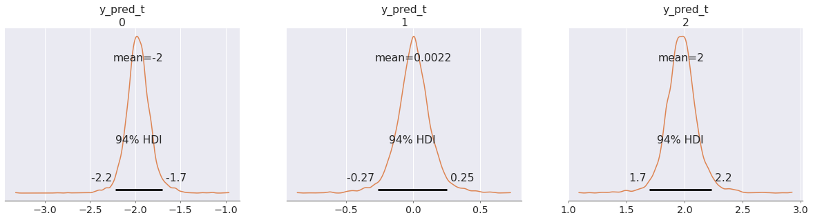
In fact it doesn't even matter that the "transferred variables" are given the same prior as in the original model. After all, the posterior distribution rarely follows the same form as the prior (there is even a funny name, conjugate prior, for the few cases where this happens).
In our case, all the knowledge we have about the posterior distribution of the parameters is encoded in the form of samples in our InferenceData posterior group. sample_posterior_predictive simply checks if a model variable has the same name as one in that group. If it finds a match, it assumes those draws are valid for the variable in the current model.
To illustrate this, we will give beta a Flat prior in our new predictive model. Note that one can't take random draws from this distribution in the first place:
try: pm.draw(pm.Flat.dist()) except Exception as exc: print(f"{exc.__class__.__name__}: {exc.args[0].splitlines()[0]}")
NotImplementedError: Cannot sample from flat variable
If sample_posterior_predictive was trying to take random draws from this variable, we would see this error. But because we have a variable with the same name in the posterior group, the function will use those draws instead, assuming implicitly that they form a valid posterior.
with pm.Model() as pred_bern_m: x = np.linspace(-1, 1, 25)) beta = pm.Flat("beta") # We again change the functional form of the model # Instead of a linear Gaussian we Have a logistic Bernoulli model p = pm.Deterministic("p", pm.math.sigmoid(beta * x)) y = pm.Bernoulli("y", p=p) pp = pm.sample_posterior_predictive( idata, var_names=["p", "y"], predictions=True, random_seed=rng, )
Sampling: [y]
In this example we forced our linear predictors through a sigmoid transformation, in order to take Bernoulli draws.
def jitter(x, rng): return rng.normal(x, 0.02) x = pp.predictions_constant_data["x"] for i in range(25): p = pp.predictions["p"].sel(chain=0, draw=i) y = pp.predictions["y"].sel(chain=0, draw=i) plt.plot(x, p, color="C0", alpha=.1) plt.scatter(jitter(x, rng), jitter(y, rng), s=10, color="k", alpha=.1) plt.plot([], [], color="C0", label="p") plt.scatter([], [], color="k", label="y + jitter") plt.legend(loc=(1.03, 0.75));
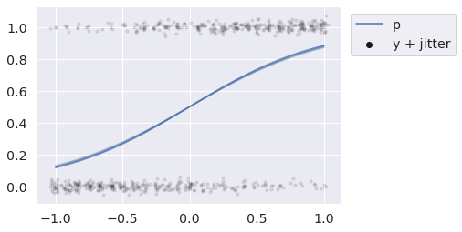
We will briefly describe the internal mechanism used by sample_posterior_predictive to combine posterior draws into predictive samples at the end. For now let's just see it in action in some other places.
Simulating new groups in hierarchical models
Hierarchical models are a powerful class of Bayesian models that allow the back-and-forth flow of information across statistically related groups. One predictive question that arises naturally in such settings, is what to expect from yet unseen groups.
Think about all the cases where this applies. You may want to predict the lifetime of the next acquired customer, or predict the sales of a new product that has not yet been launched. In both cases, we assume there is some similarity between old and new customers or products.
We will grab the eight schools model to show how posterior predictive sampling can be used to simulate new groups from a hierarchical model. We will investigate what a 9th and 10th school might look like.
y = np.array([28, 8, -3, 7, -1, 1, 18, 12]) sigma = np.array([15, 10, 16, 11, 9, 11, 10, 18]) J = 8
with pm.Model() as eight_schools: eta = pm.Normal("eta", 0, 1, shape=J) # Hierarchical mean and SD mu = pm.Normal("mu", 0, sigma=10) tau = pm.HalfNormal("tau", 10) # Non-centered parameterization of random effect theta = pm.Deterministic("theta", mu + tau * eta) pm.Normal("y", theta, sigma=sigma, observed=y) idata = pm.sample(2000, target_accept=0.9, random_seed=rng)
Auto-assigning NUTS sampler...
Initializing NUTS using jitter+adapt_diag...
Multiprocess sampling (4 chains in 4 jobs)
NUTS: [eta, mu, tau]
After sampling (and recklessly ignoring divergences) we write a predictive model that can be used to predict the out-of-sample schools 9 and 10.
While we don't have to, we will write the model in such a way that we can also get posterior predictive draws from the initial 8 schools. This will allow us to discuss some subtleties when defining predictive models.
First, note we can't simply define an eta distribution with shape=J+2, because the posterior predictive sampling function would assume we have the whole posterior for this distribution and try to use the 8 values to take 10 draws (which would crash immediately).
We actually don't know what the eta should be for the two unobserved schools, so we want to sample it from the prior. The solution is to create two vectors of variables separately, eta and eta_new and concatenate them. The sample_posterior_predictive function will reuse the InferenceData draws for eta and take new draws for eta_new.
A predictive model can have unobserved variables that were not present in the original model. When we request samples for variables that depend on unobserved variables that can't be found in the InferenceData, we will get draws from their prior. This is how we will get eta_new draws needed to generate predictions for our variable of interest, y.
Let's also assume we don't know exactly what the sigma is for the new schools, but that we can come up with a unique prior for each. We will add that as yet another unobserved variable to the predictive model. We will name it sigma_new.
with pm.Model() as ten_schools: # Priors for schools 9 and 10 # We assume that the mean of school 10 is expected to be one std above the mean # and have a relatively low measurement error eta_new = pm.Normal("eta_new", mu=[0, 1.0], sigma=1) sigma_new = pm.Uniform("sigma_new", lower=[10, 5], upper=[20, 7]) # These are unchanged eta = pm.Normal("eta", 0, 1, shape=J) mu = pm.Normal("mu", 0, sigma=10) tau = pm.HalfNormal("tau", 10) # We concatenate the variables from the old and new groups theta = pm.Deterministic("theta", mu + tau * pm.math.concatenate([eta, eta_new])) pm.Normal("y", theta, sigma=pm.math.concatenate([sigma, sigma_new])) pp = pm.sample_posterior_predictive(idata, var_names=["y"], random_seed=rng)
Sampling: [eta_new, sigma_new, y]
az.summary(pp, group="posterior_predictive")
| mean | sd | hdi_3% | hdi_97% | mcse_mean | mcse_sd | ess_bulk | ess_tail | r_hat | |
|---|---|---|---|---|---|---|---|---|---|
| y[0] | 8.815 | 16.110 | -20.375 | 40.508 | 0.178 | 0.130 | 8184.0 | 7836.0 | 1.0 |
| y[1] | 7.160 | 11.415 | -14.631 | 28.470 | 0.126 | 0.091 | 8245.0 | 7910.0 | 1.0 |
| y[2] | 5.465 | 17.145 | -27.803 | 36.261 | 0.189 | 0.137 | 8256.0 | 7846.0 | 1.0 |
| y[3] | 6.548 | 12.328 | -15.879 | 30.123 | 0.146 | 0.103 | 7128.0 | 6930.0 | 1.0 |
| y[4] | 4.875 | 10.765 | -15.694 | 24.765 | 0.124 | 0.088 | 7592.0 | 7693.0 | 1.0 |
| y[5] | 5.653 | 12.332 | -17.918 | 28.482 | 0.135 | 0.101 | 8285.0 | 7559.0 | 1.0 |
| y[6] | 8.716 | 11.520 | -13.165 | 30.285 | 0.127 | 0.091 | 8289.0 | 7738.0 | 1.0 |
| y[7] | 7.101 | 18.875 | -28.648 | 42.553 | 0.217 | 0.153 | 7614.0 | 7686.0 | 1.0 |
| y[8] | 6.354 | 16.879 | -25.829 | 38.007 | 0.192 | 0.136 | 7690.0 | 7457.0 | 1.0 |
| y[9] | 11.220 | 10.158 | -6.581 | 31.223 | 0.115 | 0.083 | 7885.0 | 7480.0 | 1.0 |
pps = az.extract(pp, group="posterior_predictive") _, ax = plt.subplots(5, 2, figsize=(8, 14), sharex=True, sharey=True) for i, axi in enumerate(ax.ravel()): sns.kdeplot(pps["y"][i], fill=True, ax=axi, color="C0" if i < 8 else "C1") axi.axvline(0, ls="--", c="k") axi.set_title(f"School[{i}]") plt.tight_layout()
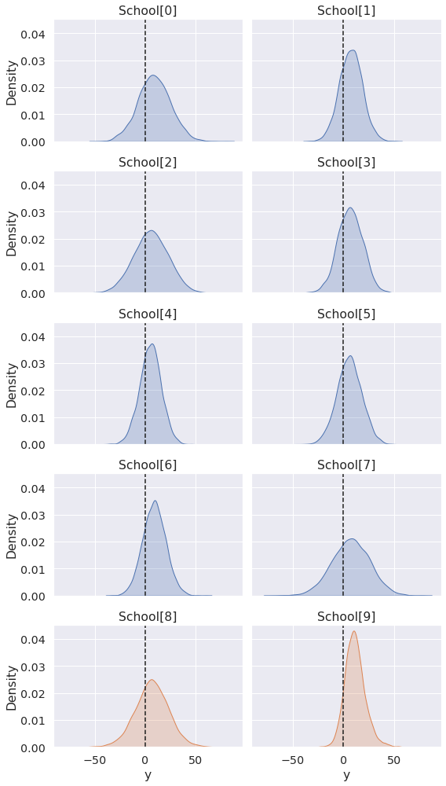
The predictions for new schools are informed by the group-level variables mu and tau, which were estimated via sampling of the original subset of 8 schools.
As there is no further structure that distinguishes the new schools, the difference in predictions arises only from the eta_new and sigma_new priors we assigned to them.
Other models could yield different predictions from independent variables, while keeping the priors equal. Other models yet may have no information that distinguishes new groups, in which case their posterior predictive draws would all be identical (up to random noise).
Let's now look into the future...
Forecasting time series
If we have a time series model, it's relatively easy to perform a forecast by creating a predictive model with a new time series that starts where the observations "left off".
For this example we will simulate draws from a Gaussian random walk (docs). If you are unfamiliar with the use of dist and draw, you may want to read our previous article on simulating data with PyMC.
mu_true = -0.05 sigma_true = 0.5 y = pm.GaussianRandomWalk.dist( init_dist=pm.Normal.dist(), mu=mu_true, sigma=sigma_true, steps=99, ) y_obs = pm.draw(y, random_seed=rng)
plt.title(f"mu={mu_true:.2f}, sigma={sigma_true:.2f}") plt.plot(y_obs, color="k");
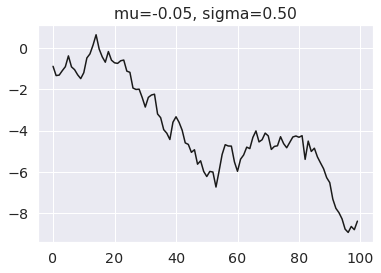
with pm.Model() as m: mu = pm.Normal("mu") sigma = pm.Normal("sigma") y = pm.GaussianRandomWalk( "y", init_dist=pm.Normal.dist(), mu=mu, sigma=sigma, observed=y_obs ) idata = pm.sample(random_seed=rng)
Auto-assigning NUTS sampler...
Initializing NUTS using jitter+adapt_diag...
Multiprocess sampling (4 chains in 4 jobs)
NUTS: [mu, sigma]
To force a new time series to start where the observations "left off", we define init_dist as a DiracDelta on the last observed y. This will force every predictive series to start at that exact value.
Note again that the prior distributions don't matter, only the variable names and shapes. We use Flat for sigma as in an earlier example. We use Normal for mu because (spoiler alert) we will actually sample from it in the next example.
with pm.Model() as forecast_m: mu = pm.Normal("mu") # Flat sigma for illustration purposes sigma = pm.Flat("sigma") # init_dist now starts on last observed value of y pm.GaussianRandomWalk( "y_forecast", init_dist=pm.DiracDelta.dist(y_obs[-1]), mu=mu, sigma=sigma, steps=99, ) pp = pm.sample_posterior_predictive( idata, var_names=["y_forecast"], predictions=True, random_seed=rng, )
Sampling: [y_forecast]
steps = np.arange(100, 200) ax = az.plot_hdi(x=steps, y=pp.predictions["y_forecast"]) # Plot first five forecasts for i in range(5): y = pp.predictions["y_forecast"].isel(chain=0, draw=i) ax.plot(steps, y, color="k") ax.plot(np.arange(100), y_obs, color="k", alpha=0.7) ax.axvline(100, ls="--", color="k") ax.set_xticks([50, 150]) ax.set_xticklabels(["observed", "forecast"]);
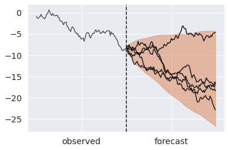
We mentioned that the validity of posterior predictive samples hangs on the premise that what we learned about variables in one context transfers to novel ones. But reality is seldom so simple.
For instance, we may believe some parameters generalize but not others. Or they may generalize but we are still unsure how much. When we create a predictive model we can easily codify this knowledge.
We will repeat the forecast example but assume only the volatility (sigma), but not the mean drift (mu) holds into the future. There are a few ways we can achieve this:
- Drop the
mudraws from the posterior group. As we mentioned in the schools example, any unobserved variable that is required for generating draws from the predictive variables will be sampled from the prior if not present. - Use a different name for the drift in the forecast time series. This is basically the same as option 1, since the new variable won't be present in the posterior group and will have to be resampled from the prior.
- Include
muinvar_names. This will forcesample_posterior_predictiveto ignore themuposterior draws and resample it from the prior. Any variables betweenmuand our variables of interest would also be resampled from the prior as the posterior draws are no longer relevant, since they depended directly onmu.
Any option is equally valid. We will pick the last one as we can reuse the model we already defined.
with forecast_m: pp_resampling_mu = pm.sample_posterior_predictive( idata, var_names=["mu", "y_forecast"], predictions=True, random_seed=rng, )
Sampling: [mu, y_forecast]
steps = np.arange(100, 200) ax = az.plot_hdi(x=steps, y=pp_resampling_mu.predictions["y_forecast"]) # Plot first five forecasts for i in range(5): y = pp_resampling_mu.predictions["y_forecast"].isel(chain=0, draw=i) ax.plot(steps, y, color="k") ax.plot(np.arange(100), y_obs, color="k", alpha=0.7) ax.axvline(100, ls="--", color="k") ax.set_xticks([50, 150]) ax.set_xticklabels(["observed", "forecast"]);
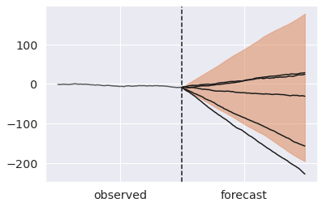
Forecasting is now incredibly wide. We can achieve a middle ground, by reusing mu but adding new uncertainty downstream of it.
with pm.Model() as forecast_noisy_m: # Again using Flat priors. This has a nice debug value, # because it confirms the values must come from the trace and not the prior mu = pm.Flat("mu") sigma = pm.Flat("sigma") # We add a new normal noise term around the inferred mu mu_noisy = pm.Normal("mu_noisy", mu, sigma=0.1) pm.GaussianRandomWalk( "y_forecast", init_dist=pm.DiracDelta.dist(y_obs[-1]), mu=mu_noisy, sigma=sigma, steps=99, ) pp_noisy_mu = pm.sample_posterior_predictive( idata, var_names=["y_forecast"], predictions=True, random_seed=rng, )
Sampling: [mu_noisy, y_forecast]
steps = np.arange(100, 200) ax = az.plot_hdi(x=steps, y=pp_noisy_mu.predictions["y_forecast"]) # Plot first five forecasts for i in range(5): y = pp_noisy_mu.predictions["y_forecast"].isel(chain=0, draw=i) ax.plot(steps, y, color="k") ax.plot(np.arange(100), y_obs, color="k", alpha=0.7) ax.axvline(100, ls="--", color="k") ax.set_xticks([50, 150]) ax.set_xticklabels(["observed", "forecast"]);
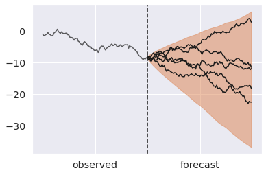
Sampling latent variables
The examples up to here focused on predicting model outcomes. In some cases we may be more interested in predicting latent variables.
In the next two examples we show that sample_posterior_predictive can be easily used for this purpose as well.
Predicting uncensored variables
We will start with a rather simple application. After doing inference on censored data we wonder what future observations may look like ignoring any censoring process (docs).
This could be used to make predictions about the expected lifetime of a patient that was still alive when the latest data was collected, or even a completely new patient.
x_censored_obs = [4.3, 5.0, 5.0, 3.2, 0.7, 5.0] with pm.Model() as censored_m: mu = pm.Normal("mu") sigma = pm.HalfNormal("sigma", sigma=1) x = pm.Normal.dist(mu, sigma) x_censored = pm.Censored( "x_censored", dist=x, lower=None, upper=5.0, observed=x_censored_obs, ) idata = pm.sample(random_seed=rng)
Auto-assigning NUTS sampler...
Initializing NUTS using jitter+adapt_diag...
Multiprocess sampling (4 chains in 4 jobs)
NUTS: [mu, sigma]
All we have to do is to recreate the original model without censoring the variable of interest.
Just for illustration purposes, we will actually make predictions from a still-censored and an uncensored process. This way we can compare the two side by side.
with pm.Model() as uncensored_m: mu = pm.Normal("mu") sigma = pm.HalfNormal("sigma") x = pm.Normal.dist(mu, sigma) x_censored = pm.Censored("x_censored", dist=x, lower=None, upper=5.0) # This uncensored variable is new x_uncensored = pm.Normal("x_uncensored", mu, sigma) pp = pm.sample_posterior_predictive( idata, var_names=["x_censored", "x_uncensored"], predictions=True, random_seed=rng, )
Sampling: [x_censored, x_uncensored]
az.plot_posterior(pp, group="predictions");
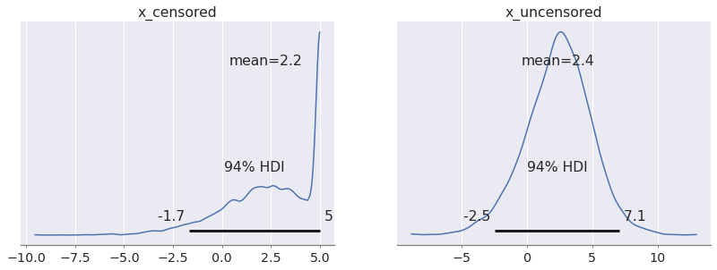
Let's mix things up for our final example...
Recovering mixture indexes
It's common advice to marginalize discrete parameters, so that inference can be done exclusively with gradient-based samplers like NUTS.
However, we often do care about the latent discrete variables. For example we may be interested in classifying which discrete source generated an observed event.
Once we have inferred the continuous parameters in our model, it's generally possible to recover marginalized variables by doing a bit of algebra. As you may have guessed, we will again rely on sample_posterior_predictive.
We pick a Mixture model as an example. The handy Mixture (docs) distribution implicitly marginalizes over categorical index variables that identify the component that generates each observation.
Here is how we can simulate some data from a Normal mixture:
# ~30% of the draws come from component 0 and 70% from component 1 w_true = [0.3, 0.7] # Components are Normals centered around -5 and 5, and with 2.5 std mu_true = [-1, 1] sigma_true = [0.5, 0.5] N = 20 idxs = pm.Categorical.dist(w_true, shape=(N,)) components = [ pm.Normal.dist(mu_true[0], sigma_true[0], shape=(N, 1)), pm.Normal.dist(mu_true[1], sigma_true[1], shape=(N, 1)), ] y = pm.math.concatenate(components, axis=-1)[np.arange(N), idxs] idxs_true, y_obs = pm.draw([idxs, y], random_seed=rng)
idxs_true, y_obs
(array([1, 1, 1, 1, 1, 1, 1, 1, 1, 1, 1, 0, 0, 1, 1, 0, 0, 1, 1, 1]),
array([ 1.33624848, 0.57901453, 0.79282242, 0.93851528, 1.29247425,
0.73555422, 0.66878824, 0.89633854, 0.37092651, 0.07381751,
0.81795087, -1.5136106 , -0.56532478, 1.44692458, 0.85920656,
-0.02250421, -1.81445585, 1.48100228, 0.25457723, 1.31812146]))
_, ax = plt.subplots(figsize=(6, 3)) # Let's plot the density x = np.linspace(-3, 3, 10_000) pdf = ( w_true[0] * pm.logp(components[0], x).exp() + w_true[1] * pm.logp(components[1], x).exp() ).eval() ax.scatter(x, pdf, s=1, c=(x/3 + 1), cmap="bwr") ax.scatter(y_obs, np.zeros(N), c=idxs_true, cmap="bwr", alpha=0.7) ax.set_yticks([]) ax.set_title("y_obs");
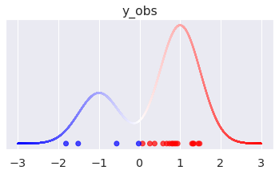
The dots in the plot correspond to the simulated values, color-coded by their original mixture component. We also plot the density of the marginalized mixture above.
In an applied setting, the true Mixture form is likely unknown and we would want to estimate it via sampling. To do this, we fit a model with wide component mean and noise priors, conditioned on our (simulated) observations. As mentioned, the Mixture distribution allows us to marginalize over the index categorical variables and perform sampling exclusively with NUTS.
with pm.Model() as m: mu = pm.Normal("mu", [-5, 5], 2.0) sigma = pm.HalfNormal("sigma", 1, shape=(2,)) w = pm.Dirichlet("w", [1, 1]) comp_dists = [ pm.Normal.dist(mu[0], sigma[0]), pm.Normal.dist(mu[1], sigma[1]) ] pm.Mixture("y", w=w, comp_dists=comp_dists, observed=y_obs) idata = pm.sample(target_accept=0.9, random_seed=rng)
Auto-assigning NUTS sampler...
Initializing NUTS using jitter+adapt_diag...
Multiprocess sampling (4 chains in 4 jobs)
NUTS: [mu, sigma, w]
az.summary(idata)
| mean | sd | hdi_3% | hdi_97% | mcse_mean | mcse_sd | ess_bulk | ess_tail | r_hat | |
|---|---|---|---|---|---|---|---|---|---|
| mu[0] | -1.656 | 1.152 | -3.535 | 0.428 | 0.051 | 0.040 | 823.0 | 391.0 | 1.02 |
| mu[1] | 0.803 | 0.168 | 0.521 | 1.151 | 0.005 | 0.004 | 1085.0 | 899.0 | 1.01 |
| sigma[0] | 0.855 | 0.512 | 0.079 | 1.771 | 0.031 | 0.022 | 154.0 | 32.0 | 1.02 |
| sigma[1] | 0.562 | 0.164 | 0.294 | 0.890 | 0.006 | 0.005 | 924.0 | 613.0 | 1.02 |
| w[0] | 0.190 | 0.129 | 0.007 | 0.435 | 0.004 | 0.003 | 790.0 | 946.0 | 1.00 |
| w[1] | 0.810 | 0.129 | 0.565 | 0.993 | 0.004 | 0.003 | 790.0 | 946.0 | 1.00 |
Equipped with some knowledge of conditional probability in mixture processes, and draws from the posterior parameters, we can now recover the indexes by sampling from a suitably parametrized Categorical distribution.
with pm.Model() as recover_m: # Remember: the prior form doesn't actually matter! mu = pm.Normal("mu", shape=(2,)) sigma = pm.HalfNormal("sigma", shape=(2,)) w = pm.Dirichlet("w", [1, 1]) comp_dists = [ pm.Normal.dist(mu[0], sigma[0]), pm.Normal.dist(mu[1], sigma[1]) ] # Compute the logp that each datapoint came from each component log_probs = pm.math.concatenate([ [pm.math.log(w[0]) + pm.logp(comp_dists[0], y_obs)], [pm.math.log(w[1]) + pm.logp(comp_dists[1], y_obs)], ], axis=0) # log_probs has shape (2, 20), we transpose it to (20, 2), so that the # Categorical takes 20 batched draws from two possible values of [0, 1] idx = pm.Categorical("idx", logit_p=log_probs.T) pp = pm.sample_posterior_predictive(idata, var_names=["idx"], random_seed=rng)
Sampling: [idx]
az.summary(pp, group="posterior_predictive")
| mean | sd | hdi_3% | hdi_97% | mcse_mean | mcse_sd | ess_bulk | ess_tail | r_hat | |
|---|---|---|---|---|---|---|---|---|---|
| idx[0] | 0.976 | 0.152 | 1.0 | 1.0 | 0.003 | 0.002 | 2262.0 | 4000.0 | 1.00 |
| idx[1] | 0.952 | 0.215 | 1.0 | 1.0 | 0.005 | 0.003 | 2121.0 | 4000.0 | 1.00 |
| idx[2] | 0.968 | 0.175 | 1.0 | 1.0 | 0.004 | 0.003 | 1883.0 | 4000.0 | 1.00 |
| idx[3] | 0.976 | 0.152 | 1.0 | 1.0 | 0.003 | 0.002 | 2237.0 | 4000.0 | 1.00 |
| idx[4] | 0.978 | 0.145 | 1.0 | 1.0 | 0.003 | 0.002 | 2333.0 | 4000.0 | 1.00 |
| idx[5] | 0.968 | 0.176 | 1.0 | 1.0 | 0.004 | 0.003 | 2157.0 | 4000.0 | 1.00 |
| idx[6] | 0.967 | 0.179 | 1.0 | 1.0 | 0.005 | 0.003 | 1554.0 | 4000.0 | 1.00 |
| idx[7] | 0.974 | 0.161 | 1.0 | 1.0 | 0.004 | 0.003 | 2011.0 | 4000.0 | 1.00 |
| idx[8] | 0.919 | 0.273 | 0.0 | 1.0 | 0.006 | 0.004 | 1863.0 | 1863.0 | 1.00 |
| idx[9] | 0.849 | 0.358 | 0.0 | 1.0 | 0.009 | 0.006 | 1612.0 | 1612.0 | 1.00 |
| idx[10] | 0.970 | 0.169 | 1.0 | 1.0 | 0.004 | 0.003 | 2099.0 | 4000.0 | 1.00 |
| idx[11] | 0.080 | 0.271 | 0.0 | 1.0 | 0.013 | 0.009 | 430.0 | 430.0 | 1.01 |
| idx[12] | 0.527 | 0.499 | 0.0 | 1.0 | 0.018 | 0.012 | 812.0 | 812.0 | 1.01 |
| idx[13] | 0.973 | 0.163 | 1.0 | 1.0 | 0.003 | 0.002 | 2263.0 | 4000.0 | 1.00 |
| idx[14] | 0.976 | 0.155 | 1.0 | 1.0 | 0.003 | 0.002 | 2024.0 | 4000.0 | 1.00 |
| idx[15] | 0.823 | 0.382 | 0.0 | 1.0 | 0.010 | 0.007 | 1382.0 | 1382.0 | 1.00 |
| idx[16] | 0.062 | 0.240 | 0.0 | 1.0 | 0.012 | 0.009 | 383.0 | 383.0 | 1.01 |
| idx[17] | 0.970 | 0.172 | 1.0 | 1.0 | 0.004 | 0.003 | 1985.0 | 4000.0 | 1.00 |
| idx[18] | 0.904 | 0.294 | 0.0 | 1.0 | 0.007 | 0.005 | 1740.0 | 1740.0 | 1.00 |
| idx[19] | 0.974 | 0.158 | 1.0 | 1.0 | 0.003 | 0.002 | 2341.0 | 4000.0 | 1.00 |
idx = pp.posterior_predictive["idx"].mean(("chain", "draw")) _, ax = plt.subplots(figsize=(6, 3)) ax.bar(y_obs, 1-idx, width=0.1, label="idx==0", color="b") ax.bar(y_obs, idx, bottom=1-idx, width=0.1, label="idx==1", color="r") ax.scatter(y_obs, np.zeros(N) - 0.1, c=idxs_true, cmap="bwr", alpha=0.7) ax.legend(loc=(1.03, 0.75));
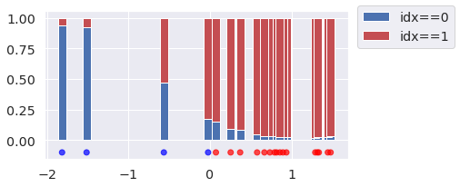
In the plot above we show the proportion of categorical draws for each observation, as the height of stacked bars.
We can see that inference about the latent indexes is reasonable for most observations. Uncertainty increases as the values get closer to the center, and can even flip when an observation is more probable under the opposite mixture component.
If we were interested in predicting the original component for new datapoints, we could just pass them instead of y_obs in the recovery model.
Concluding remarks
This blog post illustrated how PyMC's sample_posterior_predictive function can make use of learned parameters to predict variables in novel contexts. This is valid as long as the used parameters are expected to generalize.
The actual mechanism used by sample_posterior_predictive is pretty simple. We start with the generative process encoded by the PyMC model. Sampling directly from it would give us prior predictive draws (this is exactly what sample_prior_predictive does). But, for sample_posterior_predictive there is one extra step.
Any variables that are found in the posterior group of the InferenceData (via name matching), and not requested to be resampled in the var_names argument, are replaced by the posterior draws. Any of the requested variables in var_names that happen to be downstream of these, will now be "conditioned" on the posterior draws and not the priors. There are some other subtleties that you can read about in forward.py, but this is more or less the gist of it.
Generating predictions like this is seemingly trivial but very powerful. As always, we invite you to try PyMC and see if it fits your needs!
Work with PyMC Labs
If you are interested in seeing what we at PyMC Labs can do for you, then please email info@pymc-labs.com. We work with companies at a variety of scales and with varying levels of existing modeling capacity. We also run corporate workshop training events and can provide sessions ranging from introduction to Bayes to more advanced topics.